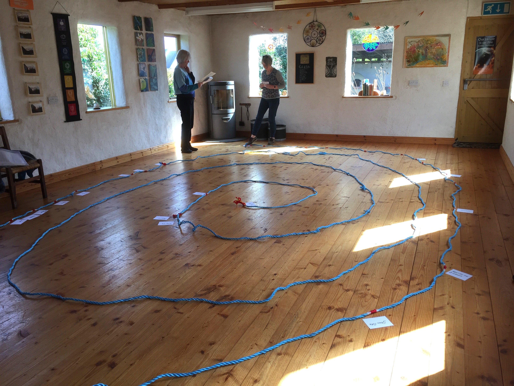

A simple dramatising of the Universe Story as a follow-up activity to the film is an enjoyable and creative way of facilitating the children to integrate the learnings into their personal lives. This can be done very simply. Children impersonate the various stages and characters of the story. They can be invited to draw or paint a picture of who they are impersonating. They can pin it on or string it around their necks. They can use the minimum script given here and encouraged to research and find out more about their character.

Suggested Props:
To illustrate the concept of relative Time - which can be very powerful-a spiral can be used as in the diagram. Given the space this can be drawn with chalk on the floor or have a rope placed in spiral form on the floor. The stages of the Story as in the script will be marked/notched out beforehand. The first person The Flaring Forth will stand at the centre (first notch), read his card and go back to his/her place. Hydrogen/Helium will walk from the centre to the second notch and do likewise. Star will walk from Hydrogen/Helium to the third notch and so on to the end.
Narrator: A long time ago, a very long time ago before Sun, Stars or Planets came
before Skies, Land, Birds or Bees, before insects Flowers or Trees, and before Humans too there was nothing, nothing at all.
Just Silence. Then – Fireball speaks:
🔥 I am FIREBALL and about 13½ billion years ago, from one tiny point I flared forth as a great Fireball of Light, Heat and energy. Some people call me ‘The Big Bang’. I was very hot then thousands of times hotter than the boiling water in your kettle. 🔥
⚛ I am HYDROGEN. the light, heat and energy of Fireball immediately expanded out in all directions. As it spread it was cooling down and creating us the very first Atoms.
I am HELIUM. Yes we are the first Atoms. Most of the Universe is made from us. We also made the first Stars. ⚛
💫 I am STAR. We are like very hot furnaces. Inside us were made all the elements like iron, calcium and carbon that are necessary for life. When we get very hot we explode and scatter our stardust far and wide. We gather together into big clusters called Galaxies. 💫
🌌 I am GALAXY. There are millions of us Galaxies and there are millions of stars in each one of us. I am the Milky Way Galaxy. There was one Star out there on my edge and when she got very, very hot she exploded and scattered her stardust everywhere. Gradually over a long time all her stardust formed our solar system. 🌌
🌠 I am the SOLAR SYSTEM. I am made up of the very big star the SUN and 8 planets. I introduce you now to Sun and the 8 planets. 🌠
☀️ I am the SUN and I am very, very hot. I am very big too. More than a million Earths would fit inside me. I am so very far away that it takes 8 minutes for my light to reach the Earth. Without me there would be no life at all. Ancient peoples including the Celts use to call me God. ☀️
🪐 I am MERCURY and I am the closest Planet to the Sun. I am also the smallest Planet in our Solar System and I am shrinking all the time.
I am VENUS and I am hotter than you Mercury even though I am further away from Sun than you. I am the only planet that spins clockwise. I have a very long day. My one day is as long as a year on Earth.
I am EARTH and I am the 3rd planet from the Sun. I’m cooler than Venus. I will tell you more later.
I am MARS and sometimes I am called the Red Planet. I may look warm but in fact I am very cold. I am smaller than Earth but I have 2 moons. I have a lot of dust storms.
I am JUPITER and I am a giant planet bigger than all the planets put together. I have 80 moons.
I am SATURN and I am the 2nd biggest planet in the Solar System. I have more moons than any other planet. You cannot stand on me because I am made mostly of gas – Hydrogen and Helium.
I am the URANUS the 7th Planet from the Sun. I am made of ice. I was the first planet to be discovered by a telescope. I have 13 rings.
I am NEPTUNE the 8th planet in the Solar System and the furthest away from the Sun. I am a very windy Planet. I look very blue from a distance. 🪐
🌍 I am EARTH. . In the beginning I was a ball of very hot molten rock and I was spewing out gasses like lava from a volcano. Gradually I cooled down and became Land, Ocean and Sky. I am very privileged because I am the right distance from you Sun – bowing to Sun. If I was the tiniest bit closer to you I would burn up. If I was even the tiniest little bit further away from you I would be barren rock. So I am the right distance from you to be able to come alive. 🌍
💧 I am OCEAN and I am very proud of the fact that it was in me that life first came. My water is salty. Your salty tears came from me. 💧
🧫️ I am BACTERIA. I am the very first life and I came to life in the ocean. I am so small you cannot see me except under the microscope, but I am very important. You couldn’t live without me. 🧫️
🌱 I am the first PLANT. I am very proud to be the first water plant. I live deep in the ocean. I look a little bit like seaweed. 🌱
🪱 Hi I am the first WORM and I too live in the ocean. I am not like today’s worms. My hairy body is made up of segments. I was like this for a very long time before I evolved into other kinds of worms. 🪱
🐟 Hello I am the first FISH. I do not look at all like today’s fish. I had no jaws, small gills and no spine. slowly I invented a back bone and it is because of me that you have a back bone. A back bone protects all the inner organs in your body. 🐟
🌿 I am PLANT but different from you – pointing to the first plant. I can photosynthesise. That is a big word. It just means that I have learned to eat sunlight and make my own food. This is very important because it means that life can go on evolving now.
I am a plant called FERN. I picked up the courage to venture out of the water and found out that I could live on land as well. It was worth the try and I am thriving. Moss came with me and is thriving as well. 🌿
🦎 I am LIZARD and we are Reptiles. When I saw what Fern could do I got courage to leave the ocean as well. It took a long time for me to grow legs so I could walk on land. The snakes, turtles, dinosaurs and many others did the same thing. 🦎
🐘 I am ELEPHANT and we are mammals. We came later than our Lizard. We mammals are different from Reptiles. We do not hatch out from eggs in a nest. We carry our babies in our bodies and we make our own milk to feed our babies. 🐘
🦡 I am BADGER and I am a Mammal as well. I am nocturnal and we live in family groups underground in burrows called Setts. 🦡
🐦 I am BIRD, We were once Reptiles and very slowly we grew wings and were able to fly. It is wonderful to be able to soar up into the skies. We brought new sounds as well with our singing. We sang the very first songs on Earth. 🐦
🌻 I am FLOWER and we brought colour to Earth. We brought Seeds and that caused life to flourish. There was lots of food for insects, birds and animals. 🌻
🙋♂️ I am HUMAN, We came late, about 2½ million years ago. It was about 13½ million years ago that it all started with the Big Fireball. It was a long, slow and very adventurous journey to the coming of the human. We came into a magnificent planet, a plant teeming with biodiversity. Our work is to cherish and protect it. 🙋♂️